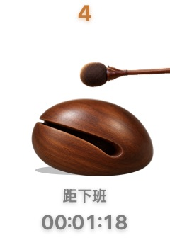
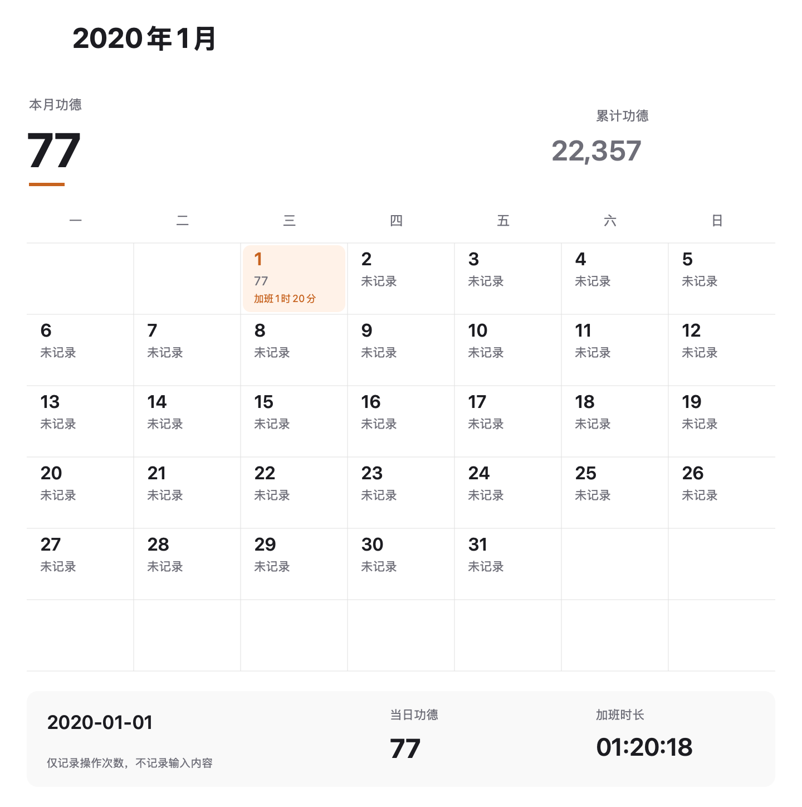

陪你上班的桌面小伙伴
现代键鼠牛马，
无量电子功德
敲键盘、点鼠标，功德自动累积。
看看今天攒了多少，再看看离下班还有多久。
支持 Windows / Mac · 基础木鱼免费 · 无需登录
全程本地运行，只统计操作次数，不读取输入内容。

忙没白忙，功德加一。
敲键盘、点鼠标、滚动一下，桌面小伙伴跟着动，今天的功德也跟着攒。

客户端效果示意
距离下班，还有多久？
设好下班时间，剩余多久一眼就能看到。时间到了，就接着显示今日加班。

新版客户端 · 测试数据
这个月，功德没少攒。
打开日历，看看每天攒了多少功德，也能回看留下的加班记录。
隐藏彩蛋
客户端里的气泡损话
在页面上敲一敲、滚一滚，解锁几句
差不多得了，老板买车又不写你名字。
忙到一定程度，它会开口。
客户端里的隐藏彩蛋：操作密集时，冒一句损友式关心。
形象可以退后，功德继续累积。
展示示意，不读取键盘输入
需要专注，就让它退到一边。
手动隐藏，计数继续；应用最大化或全屏时自动隐藏，恢复窗口后再出现。
0.9.5 新版功能已上线，下载客户端即可体验。
基础木鱼永久免费；扩展形象 ¥1/个，或用官方群码免费领取。
第一次见面？很简单。
01下载并安装支持 Windows 和 Mac，基础木鱼免费自带。
02打开客户端Mac 按系统提示开启输入监控，只统计次数。
03开始积攒正常用电脑就会计数；右键看日历、设下班时间、换形象。
还有几个问题
免费版包含什么？
客户端和基础木鱼免费，功德计数、下班倒计时、功德日历与幽默气泡都随客户端提供。0.9.5 新版还支持手动隐藏继续计数、最大化或全屏自动隐藏。可选的扩展形象按页面规则获取。
本地运行是什么意思？
安装后的客户端不联网，不需要账号或联网激活。它只统计操作次数，不读取你输入的文字；到官网获取新的形象或文案文件时才需要网络。
Mac 为什么需要输入监控？
这是 macOS 接收其他应用中键鼠事件所需的系统权限。牛马用它统计次数，不读取具体输入内容。查看权限图解
今日加班就是实际工时吗？
它按你设置的下班时间显示并保存本地时间快照，不判断你是否仍在工作，不用于考勤。
气泡是定时弹出的吗？
气泡根据持续忙碌或密集操作等条件偶尔出现，不是每隔固定时间弹一次。同一句文案七天内不重复。内置中文、英文文案各 800 条，包含日常和节日内容；官方文案包下载后双击即可在本地导入，无需重新安装客户端。